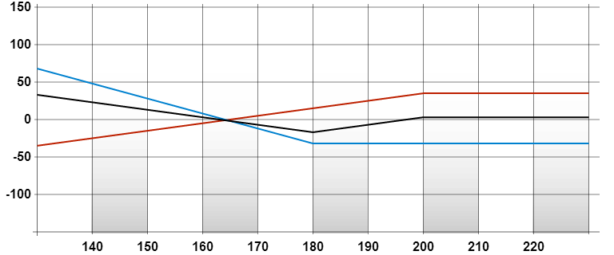

背向比例跨价认沽期权
返回| 策略 | |
|---|---|
| 背向比例跨价认沽期权 | |
| 成份 | |
| 沽出一张较高行使价/水平的认沽期权，再买入两张较低行使价/水平的认沽期权 1. 导致净期权金收入 2. 导致净期权金支出 |
|
| 导致净期权金收入： | |
| 潜在盈利 | |
|
|
| 最大亏损 | |
|
|
| 时间值影响 | |
| 负面 | |
| 打和点 | |
|
|
| 备注 | |
| 与马鞍式组合长仓相比，背向比例跨价认沽期权(导致净期权金收入)在正股价/指数水平下跌时的盈利可以是极高的，但在正股价/指数水平上升时的盈利却是有限。 | |
例子
盈 余/ 亏 损 |
 |
|---|---|
| 正股价格 | |
|
| |
| 成份 |
|---|
| 沽出一张「ABC八月200元认沽」，收取 35元，同时买入两张每张 16元的「ABC八月180元认沽」，共付出 32元 |
| 期权金净额 |
| 收取 35元 – 32元 = 3元 |
| 打和点 |
|
| 录得盈利 |
| 当正股价跌破 163元或升越 197元 |
| 潜在盈利 |
|
| 潜在亏损 |
| (200元 – 180元) – 3元 = 17元 |
| 时间值影响 |
| 负面 |